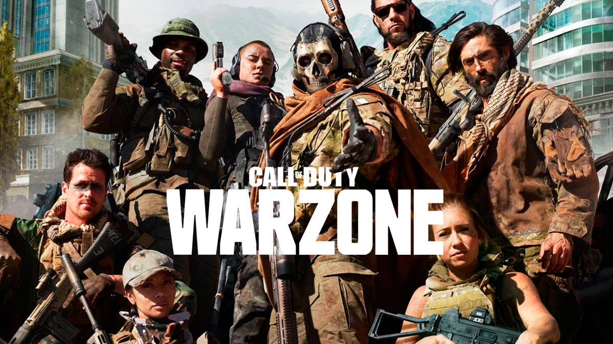

Noticas Sobre PC
Crystal Dynamics tantea un regreso de la saga Legacy of Kain en una encuesta en la que puedes participar
Se trata de una saga que lleva 20 años en el olvido para Crystal Dynamics, pero no tanto para los fans, pues seguramente se hayan alegrado mucho de saber la existencia de esta encuesta. Cabe recordar que Crystal Dinamics ya forma parte del conglomerado de Embracer Group. Aun así, es una buena noticia para los fans que la empresa se interese por su franquicia. Ha sido a través de una encuesta donde se nos pregunta por el futuro de la saga. En especial las preguntas van enfocadas a cómo nos gustaría que volviera la saga, en forma de un remake o mediante un reinicio. Además de ello, también pregunta concretamente qué título de la saga deseas que se trabaje.

También se plantea la posibilidad de un remaster de uno o de varios títulos originales. No han descartado tampoco el hecho de que pueda tratarse de una continuación directa. Seguramente estos resultados le sirvan a Crystal Dynamics como análisis de mercado para saber el pensamiento y deseo de sus fans. Ahora que la empresa forma parte de Embracer Group puede que la compañía quiera tantear la posibilidad de su regreso. Por otra parte, Square Enix retiró temporalmente Legacy of Kain: Soul Reaver de Steam, pero todavía sigue sin estar disponible para comprar, según su ficha de producto. Había un juego de la saga en desarrollo, pero se canceló. Legacy of Kain: Dead Sun, desarrollado por Climax Studios, pero finalmente el proyecto no llegó a más.
¿Por qué Warzone 2.0 aspira a convertirse en la mejor versión del battle royale de Call of Duty?
Tras todas las revelaciones que se hicieron en el último Call of Duty Next es hora de conocer muchos más detalles sobre lo que esperaremos de Call of Duty: Warzone 2. Evidentemente el título seguirá siendo gratuito donde lo mejor de todo es que recogerá todas las bondades jugables de Modern Warfare 2, por lo que en apenas unas semanas veremos en qué queda este battle royale. También hablamos del modo de juego en tercera persona junto a muchos otros aspectos que seguramente te hayas perdido. Para ello, Webedia Gaming ha tenido el placer de hablar con Eric Biessman, director creativo senior de Raven Software, y con Jack O'Hara, director de juego de Infinity Ward, donde han dejado unas declaraciones interesantes sobre múltiples aspectos.
Después de pasar por Verdansk y Caldera el objetivo de Warzone 2.0 es muy claro para Biessman: "Lo más importante es que siempre queremos ofrecer una nueva forma de juego. Hemos aprendido de los últimos tres años de Warzone, lo que a la gente le gustaba y lo que no. Cuando vayas a Al Mazrah (nuevo mapa) verás que es una destilación de nuestro mejor aprendizaje" El creativo no ha dudado en señalar el mayor cambio del battle royale: "El mayor cambio es el agua. Desde la perspectiva del mapa, ahora se puede nadar, hay barcos". Por otra parte, O'Hara señala lo siguiente: "Cuando estábamos haciendo el primer Warzone, estábamos desarrollando muchas herramientas en paralelo a la creación de Verdansk. Esta vez teníamos todas las herramientas desde el principio. Así podríamos tomarnos más tiempo para preparar el mapa, ser más juiciosos, probar más cosas."
Los 7 juegos gratis de Prime Gaming de octubre, con una aventura para fans de El Señor de los Anillos
Los incentivos de suscripción de Prime Gaming de Amazon vienen fuerte en octubre, con un surtido de propuestas que desafía a los jugadores a abrirse camino a través del pasado, el presente y el futuro. En total son siete los videojuegos que los usuarios del servicio podrán descargar gratis este mes, pero queremos quedarnos con La Tierra Media: Sombras de Guerra ahora que el universo Tolkien está de actualidad.

Conocido en inglés como Middle-earth: Shadow of War, la aventura de Monolith Productions llegó a las tiendas en 2017 proponiendo a los usuarios enfrentarse al increíble poder del Señor Oscuro, Sauron, y sus Espectros del Anillo en una aventura de rol y acción en mundo abierto que destacó por su denominado sistema Némesis. Sin duda, una aventura ideal para complementar las tardes de visionado de Los Anillos del Poder.